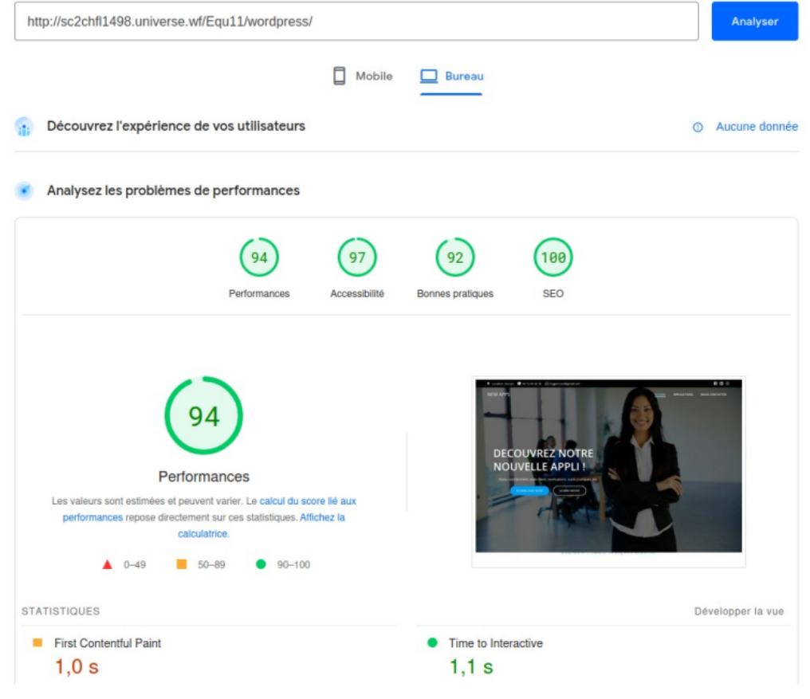
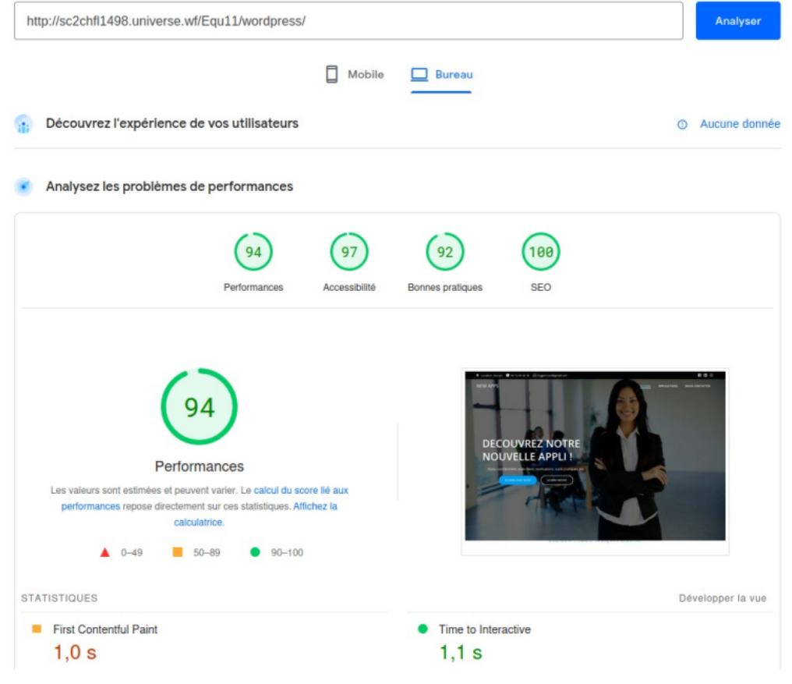

Les situations professionnelles sont des projets mis en place pendant mes deux années de BTS, ils sont associés à des compétences qui doivent être aquises au cours de la formation. Un tableau de synthèse permet de répertorier toutes les compétences aquises. Chaque contexte contient plusieurs activités et des documents liés aux productions associées.


 
